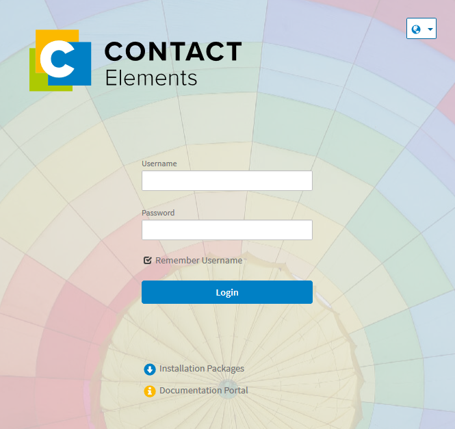

Login¶
The login to the Web UI is done via an Internet address (URL) provided by your administrator. A valid user account consisting of a username and password is required for the registration. If you do not have an user account, please contact your administrator. There is no way to log in as a guest or anonymous user. This chapter describes the system login procedure in a step-by-step guide.
Note
Via the Globe icon in the top right-hand corner of the login dialog you can set your system language. In the lower part of the login dialog you can download installation packages or open the documentation portal.
- Open the URL of the Web UI in your Internet browser.
The login dialog opens (see screenshot).

Enter your username and password in the input fields.
Click the checkbox in front of Remember username if you want to save it for future logins.
- Click on Login to log in to the system.
The homepage opens.
If you are using single sign-on (SSO) authentication, you will skip the login dialog. When opening the URL, you will go directly to the homepage without entering your user data. Keep the Shift-key pressed while starting the program in order to prevent a configured automatic login.